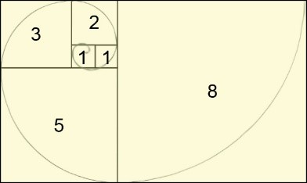

Aspectos generales de programación y algoritmos
Contents
MEC301 - Métodos Numéricos
1. Aspectos generales de programación y algoritmos#
Profesor: Francisco Ramírez Cuevas
Fecha: 1 de Agosto 2022
1.1. Complejidad de algoritmos#
1.1.1. ¿Qué es un algoritmo?#
Un algoritmo es una serie ordenada de operaciones sistemáticas que permite hacer un cálculo y hallar la solución de un tipo de problemas.
Por ejemplo:
def f(n):
out = 0
for i in range(n):
for j in range(n):
out += i*j
return out
La complejidad de un algoritmo es la relación entre el tamaño del input \(N\) y la cantidad de operaciones para completarlo. Una forma de determinar la complejidad del algoritmo es contabilizar las operaciones básicas:
sumas
restas
multiplicaciones
divisiones
asignación de variables
llamados a otras funciones
Por ejemplo, en el siguiente algoritmo:
def f(n):
out = 0
for i in range(n):
for j in range(n):
out += i*j
return out
El número de operaciones son:
sumas: \(N^2\)
restas: 0
multiplicaciones: \(N^2\)
divisiones: 0
asignación de variables: \(2N^2 + N + 1\)
llamados a otras funciones: 0
Así, el total de operaciónes para completar el algoritmo es \(4N^2+N+1\).
1.1.2. Notación Big-O#
A medida que el tamaño de \(N\) aumenta, las operaciones de mayor orden se hacen dominantes. Así, podemos decir que la complejidad del algoritmo anterior es del orden \(O(N^2)\). Esta notación, denominada Big-O, es comúnmente utiilzada para determinar la complejidad del algoritmo cuando \(N\) es de gran tamaño.
Nota Un algoritmo tiene complejidad polynomial cuando es del tipo \(O(N^c)\), donde \(c\) es una constante.
Analicemos la complejidad del siguiente algortimo:
def my_divide_by_two(n):
out = 0
while n > 1:
n /= 2
out += 1
return out
A medida que \(N\) crece podemos ver que la parte dominante de este algoritmo esta dentro de la operación while.
Si analizamos el número de iteraciones \(I\) para un determinado \(N\), notaremos que estos están en la relacción \(N/2^I = 1\), es decir \(I\approx \log N\). Así, la complejidad de este algoritmo es \(O(\log N)\).
Nota Un algoritmo tiene complejidad logaritmica cuando es del tipo \(O(\log N)\).
1.1.3. Serie de Fibonacci y complejidad exponencial#
Una operación matemática puede ser ejecutada mediante algoritmos con diferente complejidad. Por ejemplo, consideremos la serie de Fibonacci.
{kind=link}
Esta operación puede ejecutarse de dos maneras: (1) de forma iterativa, (2) de forma recursiva
(1) Forma iterativa. complejidad \(O(N)\)
def my_fib_iter(n):
out = [1, 1]
for i in range(2, n+1):
out.append(out[i - 1] + out[i - 2])
return out[-1]
my_fib_iter(6)
13
(2) Forma recursiva. complejidad \(O\left(2^N\right)\)
def my_fib_rec(n):
if n < 2:
out = 1
else:
out = my_fib_rec(n-1) + my_fib_rec(n-2)
return out
my_fib_rec(5)
8
Nota Un algoritmo tiene complejidad exponencial cuando es del tipo \(O(c^N)\), donde \(c\) es una constante.
1.1.4. Notación Big-O y tiempo de computación#
La complejidad en la notación Big-O nos entrega una referencia del tiempo computacional dedicado para un determinado algoritmo.

Así, por ejemplo, si consideramos un procesador Intel i7-12700K - 5GHz (\(\approx\) 5 billones de operaciones por segundo):
my_fib_iter(100)
tomaría \(\approx\) 0.2 nanosegundosmy_fib_recur(100)
tomaría \(\approx\) 8 trillones de años
Podemos evaluar el tiempo de ejecución con la sentencia %time
%time a = my_fib_iter(30)
CPU times: user 0 ns, sys: 0 ns, total: 0 ns
Wall time: 8.11 µs
%time a = my_fib_rec(30) #Nota. No probar N>30
CPU times: user 141 ms, sys: 0 ns, total: 141 ms
Wall time: 128 ms
nota En general, se deben evitar los algoritmos de complejidad exponencial
1.2. Representación binaria y errores de reondeo#
En un computador, la información es almacenada en formato binario. Un bit puede tener dos valores: 0 o 1. El computador es capaz de interpretar número utilizando códigos binarios.
Por ejemplo, el código de 8 bits \(001000101\) es equivalente a:
Cada variable tiene una cantidad de bits asociada.
Tipo |
Nombre |
Número de bits |
Rango de valores |
|---|---|---|---|
bool |
Boolean |
1 |
|
int32 |
Single precision integer |
32 |
-2147483648 a 2147483647 |
float64 |
Double presition float |
64 |
\((-1)^s2^{e - 1024}\left(1 + f\right)\) |
En python el tipo de variable se asigna dinámicamente. El número de bits depende de la versión de Python y el formato de la máquina en número de bits. Por ejemplo, para una máquina de 64 bits:
type(34) #int64
int
type(0.4e8) #float64
float
Usando “Numpy”, podemos controlar el número de bits asignados a una determinada variable
import numpy as np
np.zeros(1, dtype='int16')
array([0], dtype=int16)
1.2.1. Redondeo en variables tipo float#
En variables tipo float, para un determinado número de bits, existe un máximo y mínimo valor que puede ser representado. En Python, valores mayores o menores a estos son representados como inf o 0, respectivamente.
Podemos deterinar estos límites mediante la librería sys
import sys
sys.float_info
sys.float_info(max=1.7976931348623157e+308, max_exp=1024, max_10_exp=308, min=2.2250738585072014e-308, min_exp=-1021, min_10_exp=-307, dig=15, mant_dig=53, epsilon=2.220446049250313e-16, radix=2, rounds=1)
2e+308 #mayor al maximo 1.7976931348623157e+308
inf
1e-324 # menor al mínimo no normalizado 5e-324
0.0
# Mínimo no normalizado
sys.float_info.min * sys.float_info.epsilon
5e-324
1.2.2. Errores de redondeo en variables tipo float#
Las variables del tipo int no son divisibles y, por lo tanto, no sufren errores de redondeo:
5 - 2 == 3
True
Sin embargo, una variable del tipo float es divisible. Esto significa que existe una cantidad de dígitos significativos reservados para un número, lo que puede inducir errores de redondeo:
0.1 + 0.2 + 0.3 == 0.6
False
Para este tipo de operaciones es recomendable utilizar la función round
round(0.1 + 0.2 + 0.3) == round(0.6)
True
1.2.3. Acumulacion de errores de reondeo#
Cuando un código ejecuta una secuencia de operaciones, los errores de redonde suelen amplficarse.
# Si ejecutamos esta operación una vez
1 + 1/3 - 1/3
1.0
def add_and_subtract(iterations):
result = 1
for i in range(iterations):
result += 1/3
for i in range(iterations):
result -= 1/3
return result
add_and_subtract(100) # Si ejecutamos esta operación 100 veces
1.0000000000000002
add_and_subtract(1000) # Si ejecutamos esta operación 1000 veces
1.0000000000000064
add_and_subtract(10000) # Si ejecutamos esta operación 10000 veces
1.0000000000001166
1.3. Identificación de errores y debugging#
Cuando los códigos de programación son grandes, a veces es necesario utlizar herramientas de debugging. Estas herramientas nos permiten revisar las distintas etapas dentro de un algoritmo.
Podemos llamar al debugger agregando mediante la librería python debugger pdb.
Por ejemplo, consideremos la siguiente función
def square_number(x):
sq = x**2
sq += x
return sq
square_number('10')
---------------------------------------------------------------------------
TypeError Traceback (most recent call last)
Input In [26], in <cell line: 1>()
----> 1 square_number('10')
Input In [25], in square_number(x)
1 def square_number(x):
----> 2 sq = x**2
3 sq += x
5 return sq
TypeError: unsupported operand type(s) for ** or pow(): 'str' and 'int'
Agregando la sentencia %pdb on antes de llamar la función podemos analizar el codigo y detectar posibles fuentes de error.
# llamamos al debugger de python
%pdb on
square_number('10')
Automatic pdb calling has been turned ON
---------------------------------------------------------------------------
TypeError Traceback (most recent call last)
Input In [27], in <cell line: 3>()
1 # llamamos al debugger de python
2 get_ipython().run_line_magic('pdb', 'on')
----> 3 square_number('10')
Input In [25], in square_number(x)
1 def square_number(x):
----> 2 sq = x**2
3 sq += x
5 return sq
TypeError: unsupported operand type(s) for ** or pow(): 'str' and 'int'
> c:\users\francisco.ramirez.c\appdata\local\temp\ipykernel_13000\2802720476.py(2)square_number()
ipdb> help
Documented commands (type help <topic>):
========================================
EOF commands enable ll pp s until
a condition exit longlist psource skip_hidden up
alias cont h n q skip_predicates w
args context help next quit source whatis
b continue ignore p r step where
break d interact pdef restart tbreak
bt debug j pdoc return u
c disable jump pfile retval unalias
cl display l pinfo run undisplay
clear down list pinfo2 rv unt
Miscellaneous help topics:
==========================
exec pdb
ipdb> h a
a(rgs)
Print the argument list of the current function.
ipdb> a
x = '10'
ipdb> h p
p expression
Print the value of the expression.
ipdb> p x**2
*** TypeError: unsupported operand type(s) for ** or pow(): 'str' and 'int'
ipdb> p locals()
{'x': '10'}
ipdb> quit
# detenemos el debugger
%pdb off
Automatic pdb calling has been turned OFF
También podemos agregar breakpoints en distintas líneas de código para detener el debugger.
import pdb
def square_number(x):
pdb.set_trace() # agregamos un 1er breakpoint
sq = x**2
pdb.set_trace() # agregamos un 2do breakpoint
sq += x
return sq
square_number(3)
> c:\users\francisco.ramirez.c\appdata\local\temp\ipykernel_13000\1502937933.py(5)square_number()
ipdb> a
x = 3
ipdb> p locals()
{'x': 3}
ipdb> sq
*** NameError: name 'sq' is not defined
ipdb> continue
> c:\users\francisco.ramirez.c\appdata\local\temp\ipykernel_13000\1502937933.py(9)square_number()
ipdb> p locals()
{'x': 3, 'sq': 9}
ipdb> sq
9
ipdb> p sq - x
6
ipdb> quit
Algunos comandos útiles de pdb:
help: lista de todos los comandos del debuggerh#comando: detalle del funcionamiento de un comando en específicoaoargs: muestra el valor del argumento de la funciónp: imprime el valor de una expresión específica. Usarlocals()para mostrar valor de variables localespdb.trace(): agrega un breakpoint (pausa en el código)continue: continua con el código despues de un breakpointquit: finaliza el debugger.
1.4. Referencias#
Kong Q., Siauw T., Bayen A. M. “Python Programming and Numerical Methods – A Guide for Engineers and Scientists”, 1st Ed., Academic Press, 2021
Capitulo 8 (Complejidad de algoritmos)
Capítulo 9 (Representación binaria y errores de redondeo)
Calítulo 10 (Identificación de errores y debugging)